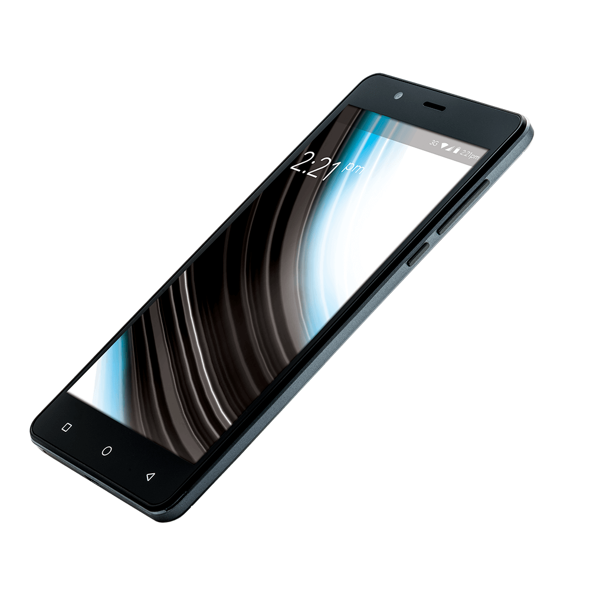

Teste via computador
Como verificar a qualidade do sinal de uma rede Wi-Fi com seu computador.



Teste via celular
Como verificar a qualidade do sinal de uma rede Wi-Fi com seu celular.
Para lhe ajudar a descobrir como está o sinal de seu Wi-Fi ou qual a melhor rede para se conectar separamos duas formas de realizar este serviço.
Confira agora:
Como verificar a qualidade do sinal de uma rede Wi-Fi com seu computador.
Como verificar a qualidade do sinal de uma rede Wi-Fi com seu celular.